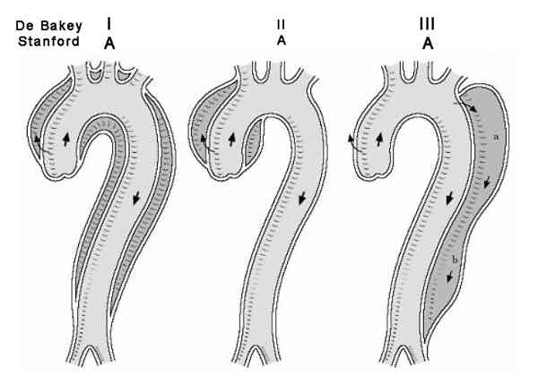

Bienvenue Sur Medical Education
Dissection : aorte
Spécialité : vasculaire /
Points importants
-
Irruption de sang dans la paroi de l'aorte
-
Une déchirure de l'intima devient la porte d'entrée d'un faux chenal (clivage longitudinal entre les 2 couches de la média)
-
Progression pouvant être ascendante (antérograde), descendante (rétrograde) ou les deux
-
Tout processus fragilisant la paroi artérielle favorise la survenue d'une dissection
-
Le maître symptôme est la douleur thoracique brutale migratrice mais il existe des tableaux cliniques atypiques
-
Dès que le diagnostic est confirmé, le patient doit être orienté par SAMU dans le centre de chirurgie thoracique le plus proche
-
Le taux de mortalité est de 1% par heure au cours des 48 premières heures
Présentation clinique / CIMU
SIGNES FONCTIONNELS
Présentation clinique / CIMU
SIGNES FONCTIONNELS
Spécifiques
-
Cardiovasculaires :
- douleur thoracique brutale intense migratrice avec irradiation dorsale puis abdominale
-
Neurologiques :
- trouble de conscience
- perte de sensibilité, douleur d'un membre (ischémie)
Autres
- lipothymie, syncope (trouble du rythme, choc hémorragique ou vagal de part l'intensité de la douleur)
- douleur abdominale par ischémie digestive
CONTEXTE
Terrain
- Le plus souvent, sujet hypertendu athéromateux de 60-70 ans
- Prédominance masculine (65%)
-
Si sujet jeune, rechercher une dysplasie artérielle :
- syndrome de Marfan (maladie génétique su système conjonctif : maigreur, hyperlaxité des articulations, croissance exagérée des membres)
- syndrome d'Ehlers Danlos (altération du tissu collagène, hyperélasticité de la peau avec troubles de cicatrisation, héréditaire)
- maladie annulo-ectasiante (insuffisance aortique dystrophique)
-
Autres causes plus rares :
- maladie de Takayashu
- aortite
- maladie de Behçet
- intoxication aux amphétamines et cocaïne
Antécédents
- ATCD familiaux de dissection aortique
Circonstances de survenue
- Spontané : pas de circonstance favorisante retrouvée
-
Traumatique :
- cathétérisme artériel vasculaire
- chirurgie cardiaque
- accident de la voie publique (une décélération brutale : aorte ascendante ou l'isthme le plus souvent atteint)
EXAMEN CLINIQUE
Cardio-vasculaire
-
Instabilité hémodynamique :
- signes de choc, collapsus
- HTA sévère
- Asymétrie tensionnelle (prendre la PA aux 4 membres ; la PA aux membres inférieurs est physiologiquement légèrement plus élevée qu'aux membres supérieurs en absence d'AOMI)
- Asymétrie de pouls (50% des cas)
- Souffle diastolique d'insuffisance aortique
- Souffle vasculaire uni ou bilatéral (carotidien, abdominal ou fémoral)
- Frottement péricardique, tamponnade
- Syndrome de Leriche
- Signes d'ischémie de membres
Pulmonaire
- Epanchement pleural (le plus souvent gauche)
- Hémoptysie
Neurologique (40% des dissections aortiques de type A)
- Coma
- Paraplégie
- Déficit neurologique focal (une ischémie cérébrale ou spinale)
Autres
- Oligurie ou anurie par ischémie rénale
- Fébricule
- Dysphonie par compression récurrentielle
- Hématémèse (rupture aortique dans l'oesophage)
EXAMENS PARACLINIQUES SIMPLES
ECG
- Le plus souvent normal
- Aspect d'ischémie ou de lésion : 20% des dissections de l'aorte ascendante sont compliquées d'une extension aux artères coronaires (coronaire droite)
- Signes de péricardite, tamponnade (ischémie diffuse, alternance électrique...)
Hémoglobine capillaire (anémie)
BU (hématurie)
CIMU
- Tri 1
Signes paracliniques
BIOLOGIQUE
-
NFS, plaquettes
-
TP, TCA, fibrinogène (systématique)
-
Lactates élevés si choc ou ischémie d'organe
-
Ionogramme sanguin : insuffisance rénale aiguë si ischémie rénale
-
CPK, Troponine : élevé si ischémie coronaire
-
Groupe rhésus et RAI
IMAGERIE
Classification anatomique de Stanford
-

_801
Classification de Sanford
- Type A : concerne tout ou partie de l'aorte ascendante ou de la crosse
- Type B : ne concerne que l'aorte descendante après la naissance de l'artère sous-clavière gauche
4 objectifs majeurs
- Confirmer le diagnostic
- Préciser le type anatomique et donc le traitement
- Localiser la porte d'entrée et l'extension du processus disséquant
- Détecter une complication (fuite, hémopéricarde, hémomédiastin ou épanchement pleural)
Le choix dépendra du plateau technique disponible
2 examens clefs
-
Angioscanner thoracique (sensibilité et spécificité > 90%) :
- imagerie de choix aux urgences si patient stable
- visualisation d'un aspect en double lumière artérielle avec un flap intimal divisant le vrai chenal et le faux chenal
- il précise l'extension de la dissection, une complication éventuelle
-
Echographie transoesophagienne (ETO) si patient instable :
- confirme le diagnostic si visualisation d'un flap au sein de la lumière artérielle anéchogène
- localise de la porte d'entrée, le sens des flux artériels
- visualisation du vrai chenal (expansion systolique) et du faux chenal (collapsus systolique et expansion diastolique)
-
visualisation des complications :
- présence de thrombus
- présence d'un hémopéricarde
- régurgitation aortique
Radiographie de thorax de face
- Systématique
- Anormale dans 60 à 90% des cas
-
Visualisation :
-
élargissement médiastinal dans 60% des cas :
- aspect pathognomonique en double contour de l'aorte
- épanchement pleural gauche (20%)
-
élargissement médiastinal dans 60% des cas :
Echographie transthoracique
- Au mieux couplée à l'ETO
- Sensibilité 80%, spécificité > 90%
- Réservée à des opérateurs entraînés
- Peut permettre le diagnostic dans les cas évidents
- La crosse aortique est dégagée par voie sus-sternale et la portion ascendante par voie parasternale gauche
- Permet de visualiser un hémopéricarde ou une régurgitation aortique
Autres
- IRM
- Aortographie
-
IVUS (intravascular ultrasond = échographie endovasculaire)
Diagnostic étiologique
- Voir partie « Terrain » des signes cliniques
Diagnostic différentiel
D'une douleur thoracique
- Syndrome coronarien
- Péricardite aiguë
- Insuffisance aortique sans dissection
- Anévrysme aortique sans dissection
- Embolie pulmonaire
- Douleur pariétale, pleurésie
D'une asymétrie tensionnelle
- Plaque athéromateuse axillo-sous-clavière
D'une pathologie de la paroi aortique
- Hématome ou hémorragie intrapariétale
- Ulcération d'une plaque athéromateuse
-
Dissection aortique à minima (localisée à un endroit précis de la paroi aortique)
Traitement
TRAITEMENT PREHOSPITALIER / INTRAHOSPITALIER
Traitement médical
- Monitoring multiparamétrique en continu, (PA : le plus souvent non invasif choisir le bras le plus hypertendu en cas d'asymétrie tensionnelle)
- 2 voies veineuses de bon calibre
- NaCl 0,9% en garde veine
- Repos strict en décubitus dorsal
- A jeun
- Oxygénothérapie pour SpO2 > 95%
- Intubation avant transfert en cas de coma, détresse circulatoire incontrôlable ou de choc réfractaire mais doit être évitée ++
- Interdiction formelle de tout anticoagulant ou anti-agrégant plaquettaire
- Prévenir anesthésiste-réanimateur et chirurgien cardio-thoracique oucardiologue
- Antalgiques : il est capital de contrôler immédiatement la douleur (fonction de l'EN ou l'EVA)
-
Antihypertenseurs (voir crise hypertensive) :
- objectifs hémodynamiques : PAS entre 100 et 120 mmHg
-
les bêtabloqueurs réduisent la contrainte sur la paroi vasculaire :
- labétalol : dose de charge = 20 mg (0,25 mg/kg) IV sur 2 min; puis 20-80 mg sur 10-15min; entretien = 2 mg/min IVSE (dose totale maximale = 300 mg)
- propanolol : 0,05 à 0,15 mg/kg IVSE sur 6 heures
Traitement chirurgical
-
Concerne surtout les dissections de type A de Stanford
- _801 Classification de Sanford
-
Objectifs :
- prévenir le risque de rupture aortique et de tamponnade cardiaque
-
réparer une insuffisance aortique ou traiter une ischémie coronaire
Surveillance
CLINIQUE
- Surveillance de la PA/5 min au brassard
- Diurèse, FC, conscience, EVA/h
PARACLINIQUE
Devenir / orientation
- Transport immédiat ou transfert médicalisé inter-hospitalier par SAMU dans le service de chirurgie thoracique ou au mieux au bloc opératoire directement
-
Transfert médicalisé au TDM
Bibliographie
- Diagnosis and management of aortic dissection, R Erbel and al. European Heart journal (2001); 22, 1642-1681
- Dissections aortiques aiguës. Encyclopédie médico chirurgicale. Médecine d'urgence
Auteur(s) : Sébastien GALLULA